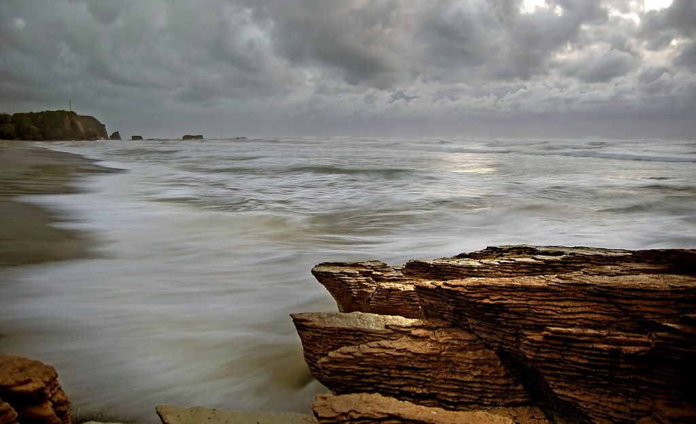
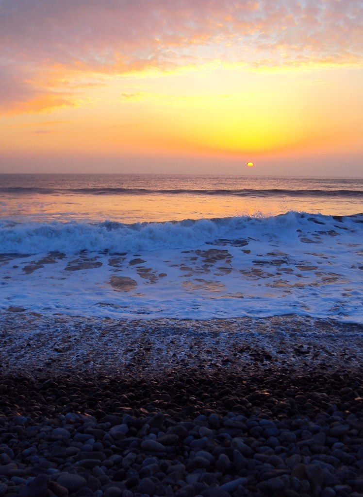
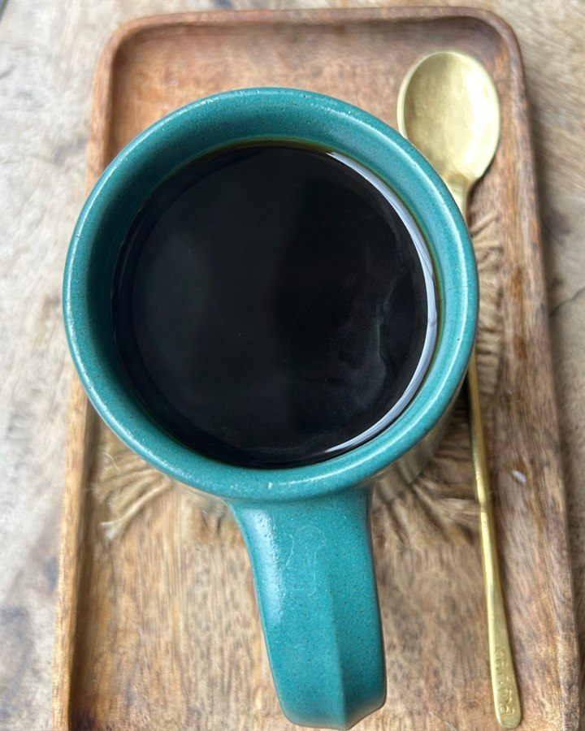
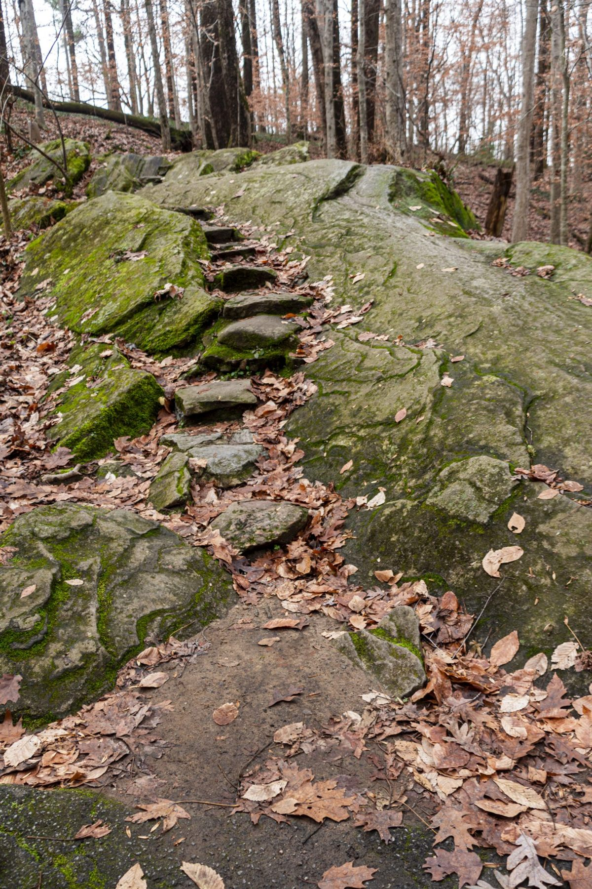

ここで、ひと息。
※制作側の案です多だ屋
カフェ / 高知県室戸市吉良川町

お店のこと
このページの内容は、制作側の案と、準備中の項目で構成しています。
お店の考え方や提供内容など、実際の情報はお問い合わせください。



ここで、ひと息。
※制作側の案ですカフェ / 高知県室戸市吉良川町

このページの内容は、制作側の案と、準備中の項目で構成しています。
お店の考え方や提供内容など、実際の情報はお問い合わせください。



写真はフリー素材のイメージで、店舗の実際の様子ではありません。他の地域で撮影されたもの・撮影地が不明なものを含みます。
電話する 090-4508-7559